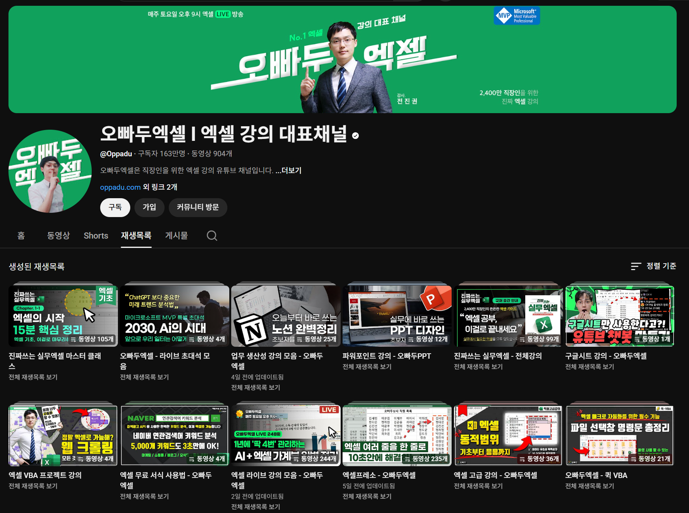
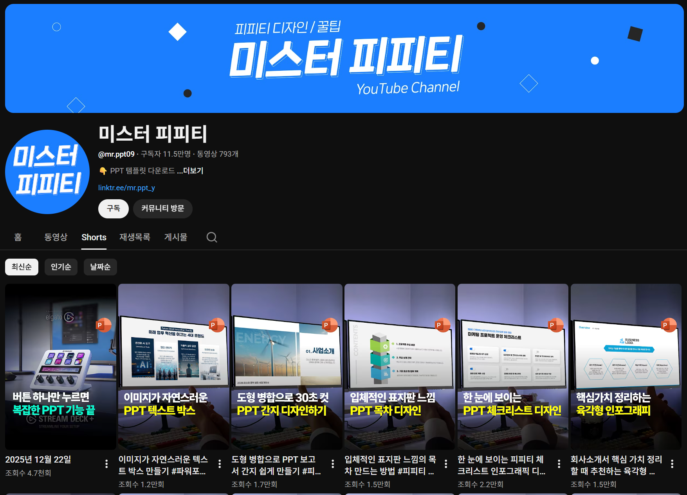

유튜브 영상 참고
직접 서식을 지정하거나 애니메이션을 적용하는데 어려움이 있다면
유튜브에 해당 자료들을 찾아보는 것이 큰 도움이 된다.
여러 사람들의 창의적이고 독특한 효과와 서식을 쉽고 빠르게 배울 수 있다.
PPT의 서식과 애니메이션을 활용한 영상을 올리는 채널들


메인 페이지로 돌아가기
이전 페이지로
∷
PPT 제작
시 유용한
방법
및
기능
무료 이미지
PPT 템플릿
애니메이션 효과
유튜브 영상 참조